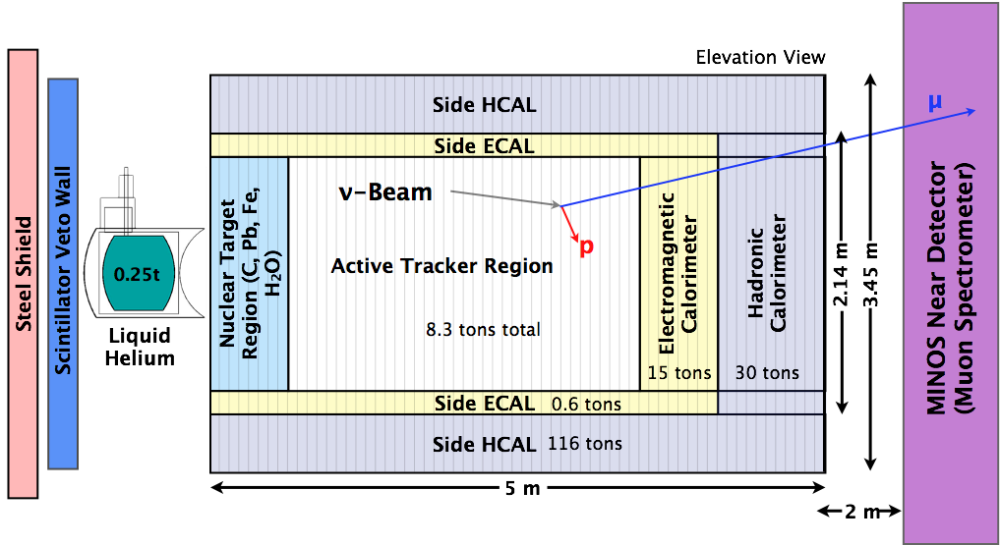
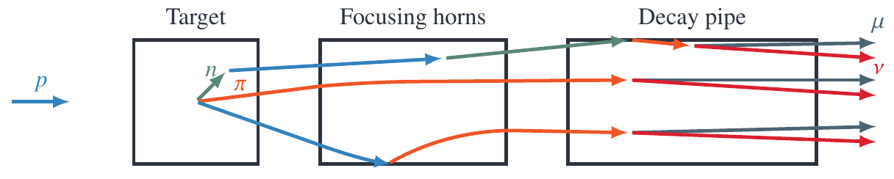
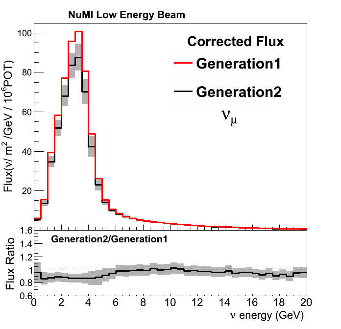
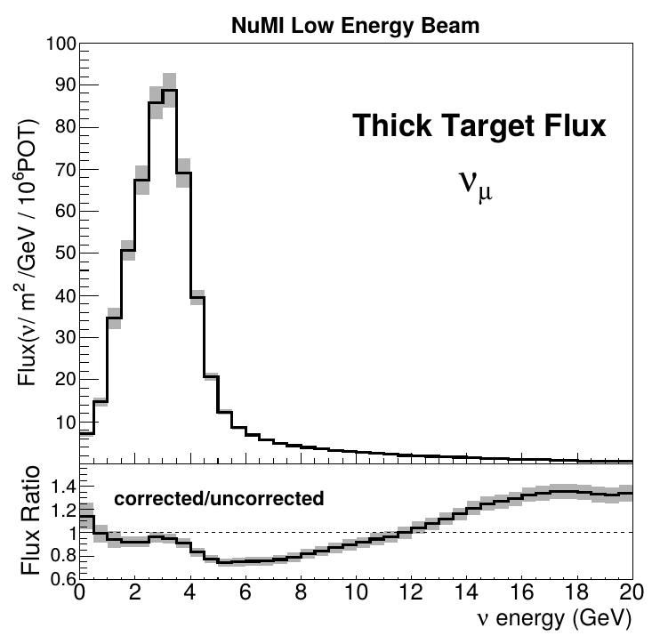
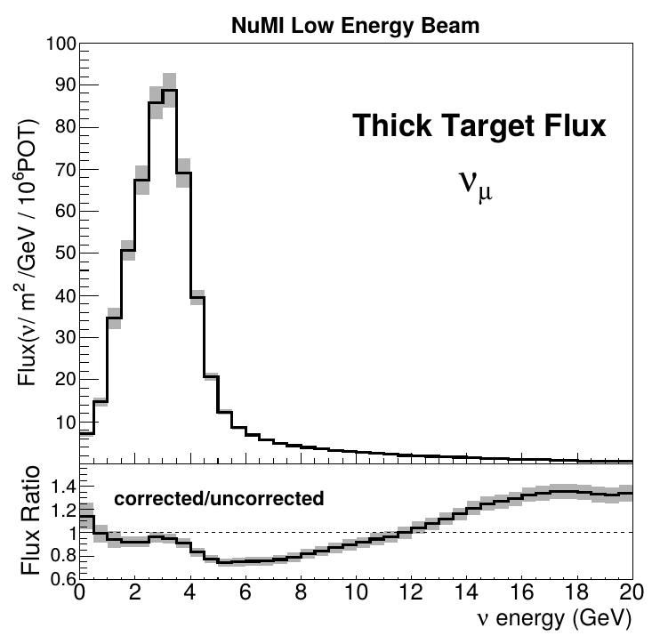
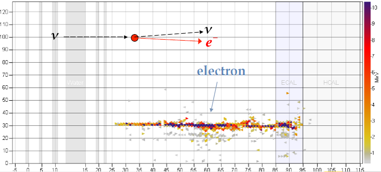
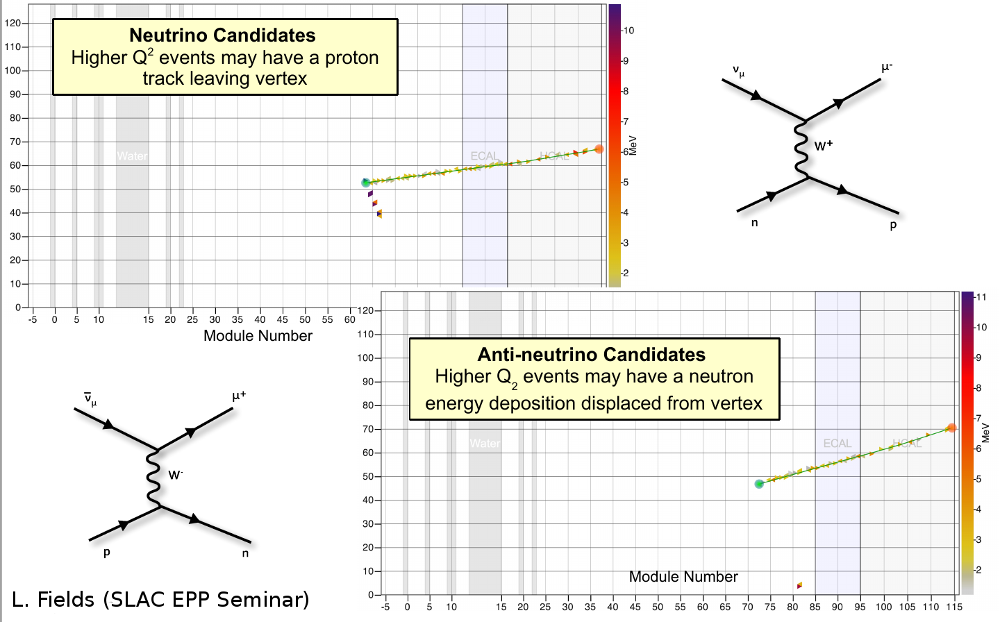
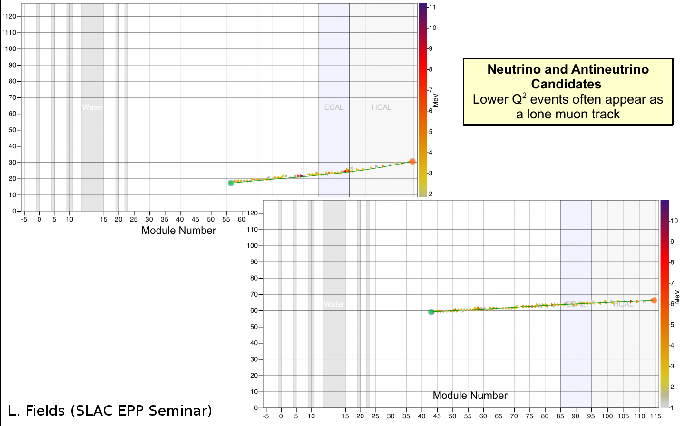
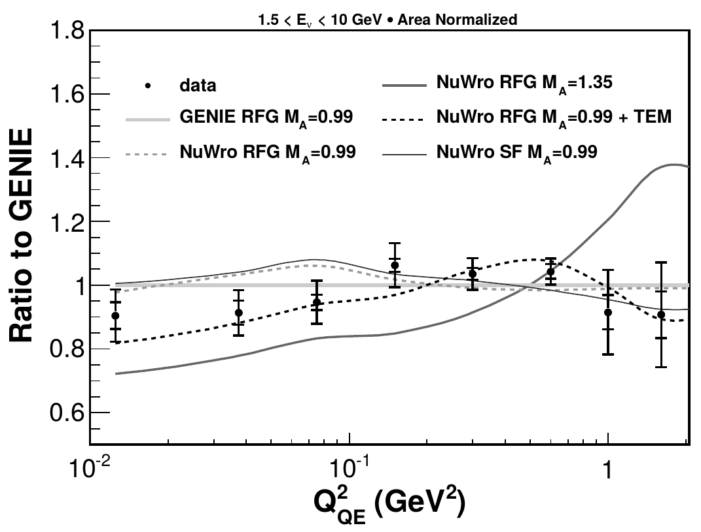
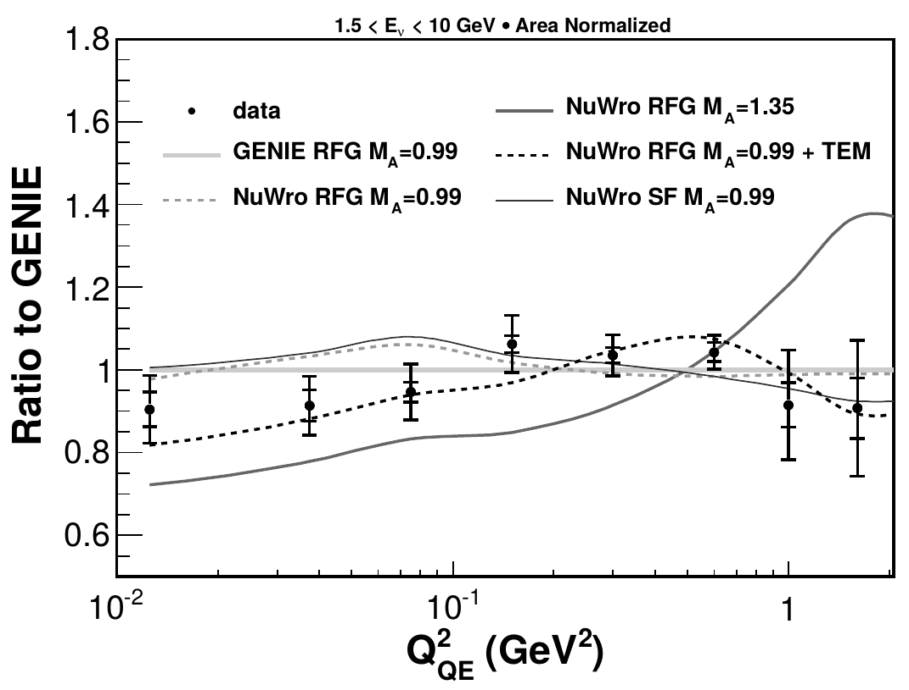

MINERvA Review
Tomasz Golan
Neutrino Seminar, 14.11.2016
Postdoc summary
University of Rochester
Department of Physics and Astronomy
MINERvA (prof. Kevin McFarland)
- flux systematic errors
- physics reconstruction using machine learning
- generator group coordinator
- production group leader
Fermi National Accelerator Laboratory
Scientific Computing Division
GENIE (dr. Gabe Perdue)
- nuclear effects in GENIE
- automated validation system
- "user support"
MINERvA Experiment
- MINERvA is a neutrino-scattering experiment at Fermilab
- Collaboration of about 50-100 physicist
- NuMI beam is used to measure cross section for neutrino-nucleus interactions
- The detector includes several different nuclear targets

Detector

Nuclear targets

NuMI Beamline

Low vs Medium Energy
by changing distance between horns one can change energy spectrum
by changing horns polarization one can switch between neutrino and anti-neutrino mode

Flux
NuMI Beam Simulation

Flux simulation starts with a Geant4 with the NuMI geometry
All of the information about interactions leading to neutrino are stored
The results of the simulation are corrected by external data
Similar approach to the one T2K used
Hadron Scattering Data
NA49 - charged hadron production in proton scattering off thin targets
FLUKA is used to scale proton energy from \(158\) to \(120\) GeV
MIPP - charged hadron production on thin target and NuMI target replica
NA49 Data

MIPP data

Reweighting
\[w_{HP} = \frac{f_{data}(x_F, p_T, E)}{f_{MC}(x_F, p_T, E)}, ~~~~~ f\equiv\frac{E}{\sigma}\frac{d^3\sigma}{dp^3}\]
Using external hadron production data events are weighted using the above formula
An event is reweighted on "interaction-by-interaction" basis
Whenever possible - "thick" target data is used
Uncertainties
Many-Universes method is used to propagate external data uncertainties to our flux
for each universe (u) data central value is shifted (respect to data uncertainties)
\[w_u \sim \prod_i w_{HP, u, i}\]

Flux history
Flux generations
Generation 0 -> no MIPP data
Generation 1 -> MIPP thin target data + other improvements
Generation 2 -> MIPP thick target data + other improvements
Flux vs publications
| Flux | Analysis | Reference |
|---|---|---|
| Generation 0 | \(\nu_\mu\) CCQE | PRL 111 (2013) 022502 |
| Generation 0 | \(\bar{\nu_\mu}\) CCQE | PRL 111 (2013) 022501 |
| Generation 1 | CC target ratios | PRL 112 (2014) 231801 |
| Generation 1 | Coherent \(\pi\) | PRL 113 (2014) 261802 |
| Generation 1 | \(\nu_\mu\) muon + proton | PRD (2015) 071301 |
| Generation 1 | \(\bar{\nu_\mu}\) CC \(\pi^0\) | PLB 749 (2015) 130 |
Generation 0 vs Generation 2 (thick off)

Generation 1 vs Generation 2 (thick off)

Generation 2 (thin vs thick)
 

Generation 2: ratio

Flux constraints
\(\nu e\) constraint

- Weighting up universes that agree better with data
- Experimental signature is a very forward single electron in the finale state

Generation 1 + \(\nu e\)

low-\(\nu\) method
\[\frac{d\sigma}{d\nu} = A + B\frac{\nu}{E} - \frac{C}{2}\frac{\nu^2}{E^2}\]
Differential cross-section can be expressed by the above formula
It is a constant for \(\frac{\nu}{E} \rightarrow 0\)
It can be used to constraint the flux prediction (with high-energy normalization taken from other measurements, like NOMAD)
low-\(\nu\) vs generation 2

CCQE results
CCQE "true" aka "1-track"
| Flux | Analysis | Reference |
|---|---|---|
| Generation 0 | \(\nu_\mu\) CCQE | PRL 111 (2013) 022502 |
| Generation 0 | \(\bar{\nu_\mu}\) CCQE | PRL 111 (2013) 022501 |
require only muon track
target -> scintillator (CH)
High-\(Q^2\) candidates

Low-\(Q^2\) candidates

Background

Background subtraction

\(\nu_\mu\) CCQE
 

\(\bar\nu_\mu\) CCQE